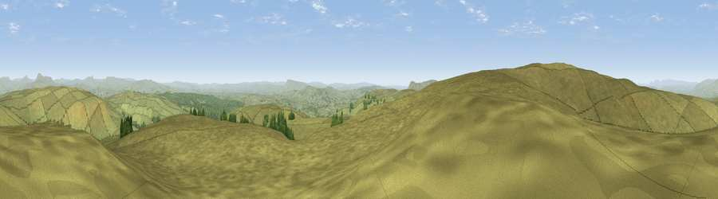

Viewpoint c9171_7367
#4101 in England · top 7% of its area beats it · —Where it is
The exact computed spot (SD 68425 58625). Click the marker for map links.
The view, rendered

A 360° render of this exact spot computed from the terrain model, tree cover and land cover — summer colours, afternoon light, calibrated against photographs of famous viewpoints. Real trees, hedges and buildings will differ in detail.
The panorama
Grey silhouette: terrain skyline in each direction (720 bearings, Earth curvature and refraction included). Dashed green: skyline with trees (+15 m) and buildings (+8 m) as obstacles. Blue strip: how far the ground is visible on each bearing.
Where the view opens
Wedge length = distance to the farthest visible ground on that bearing (vegetation-aware). Rings at 10, 25 and 50 km.
What fills the view
95% grassland · 4% woodland
Angular shares of the visible panorama (visual magnitude), not map area. Landscape diversity 0.09 (0–1 Shannon).
Key numbers
More beautiful places nearby
The staircase of upgrades: each row has a higher view potential than everything closer. Driving times are estimates from straight-line distance, calibrated against real road routing — check an actual route before setting out.
| Place | Direction | Drive | Score |
|---|---|---|---|
| Viewpoint c9175_7348 | WNW · 1 km | ~3 min | 72.9 |
| Hailshowers Fell | NNE · 3 km | ~6 min | 73.8 |
| Viewpoint c9157_7266 | W · 5 km | ~11 min | 75.6 |
| Whins Brow | SW · 7 km | ~15 min | 76.3 |
| Viewpoint c9170_7172 | W · 10 km | ~19 min | 77.0 |
| Grit Fell | W · 13 km | ~24 min | 77.3 |
| Viewpoint near Quernmore | W · 14 km | ~25 min | 78.0 |
| Little Ingleborough | NNE · 16 km | ~28 min | 78.8 |
54.02265, -2.48344 · source: screening · position refined by local search. Computed location — check access rights before visiting.